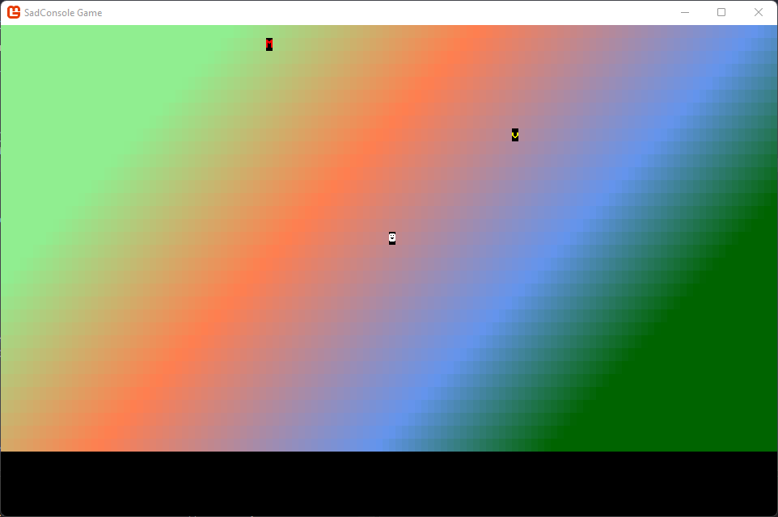

Get Started 4 - A proper map
In this part of the tutorial, we explore improving the map and game objects. You learn how to upgrade the map from just a simple surface object to a map object that can create other game objects.
Previous articles in this tutorial:
Prerequisites
This part of the tutorial continues where the previous one left off. If you don't have your code handy, you can download it from here and follow along.
Bounds checking
Currently, the game crashes if you move the character off of the screen. To solve this, you need to make sure that the game object checks that it's within the bounds of the map before it moves. You can do that in two places:
Outside of the game object.
By checking the bounds of the map before the game object is moved, you prevent the game object from entering a non-existent map tile. However, this means that you need to make sure you always check for map bounds before you call
GameObject.Move. You could easily forget to do this if you have multiple code paths that could move a game object.Inside the game object.
You can modify the
GameObject.Movemethod to check for map bounds, returning a boolean value to indicate whether the move was successful or not. However, this means theGameObjectneeds access to the map data to understand the bounds of the map.
For now, the GameObject.Move method is receiving our version of map data, simply the surface cells of the map. So we can quickly check and see if the desired position is within the bounds of the surface. So it's logical that we check for the bounds of the map here.
Open the GameObject.cs file
Find the
Movemethod and change the return type fromvoidtobool:public bool Move(Point newPosition, IScreenSurface screenSurface)Next, use the
IScreenSurface.Surface.IsValidCellmethod to check if thenewPositionis a valid cell position, and returntrueorfalsebased on that result.public bool Move(Point newPosition, IScreenSurface screenSurface) { // Check new position is valid if (!screenSurface.Surface.IsValidCell(newPosition.X, newPosition.Y)) return false; // Restore the old cell _mapAppearance.CopyAppearanceTo(screenSurface.Surface[Position]); // Store the map cell of the new position screenSurface.Surface[newPosition].CopyAppearanceTo(_mapAppearance); Position = newPosition; DrawGameObject(screenSurface); return true; }
Now, run the code and try moving the player object off the side of the screen. Notice that the player object simply stays where it was when the new position is invalid.
A proper map
Soon we'll add more game object types such as monsters and treasure. However, adding more game objects and logic presents a problem: where to store all that information. Currently, we've been working in the RootObject class, which was composing the game screen for us. But with adding more game object types, managing the life of those, handling collisions, and things like that, we need a class that better represents the game map.
Add a new class to your project named Map.cs. We're going to move all of the map related code from RootObject.cs to this new class.
using SadConsole;
using SadRogue.Primitives;
using System.Collections.Generic;
namespace SadConsoleGame
{
public class Map
{
private ScreenSurface _mapSurface;
public ScreenSurface SurfaceObject => _mapSurface;
public GameObject UserControlledObject { get; set; }
public Map(int mapWidth, int mapHeight)
{
_mapSurface = new ScreenSurface(mapWidth, mapHeight);
_mapSurface.UseMouse = false;
FillBackground();
UserControlledObject = new GameObject(new ColoredGlyph(Color.White, Color.Black, 2), _mapSurface.Surface.Area.Center, _mapSurface);
}
private void FillBackground()
{
Color[] colors = new[] { Color.LightGreen, Color.Coral, Color.CornflowerBlue, Color.DarkGreen };
float[] colorStops = new[] { 0f, 0.35f, 0.75f, 1f };
Algorithms.GradientFill(_mapSurface.FontSize,
_mapSurface.Surface.Area.Center,
_mapSurface.Surface.Width / 3,
45,
_mapSurface.Surface.Area,
new Gradient(colors, colorStops),
(x, y, color) => _mapSurface.Surface[x, y].Background = color);
}
}
}
This code is slightly different from the previous RootScreen.cs code, with the following changes:
- The variable that represented the game map surface was renamed from
_mapto_mapSurface. - The game map surface is exposed publicly through the get-only
SurfaceObjectproperty. - The
_controlledObjectvariable held the player object, but now that's a public property namedUserControlledObject.
Next, update the code in RootObject.cs, removing the code ported to the new map object. This class still handles the keyboard input. Replace the code in the class with the following:
using SadConsole;
using SadConsole.Input;
using SadRogue.Primitives;
namespace SadConsoleGame
{
public class RootScreen : ScreenObject
{
private Map _map;
public RootScreen()
{
_map = new Map(Game.Instance.ScreenCellsX, Game.Instance.ScreenCellsY - 5);
Children.Add(_map.SurfaceObject);
}
public override bool ProcessKeyboard(Keyboard keyboard)
{
bool handled = false;
if (keyboard.IsKeyPressed(Keys.Up))
{
_map.UserControlledObject.Move(_map.UserControlledObject.Position + Direction.Up, _map.SurfaceObject);
handled = true;
}
else if (keyboard.IsKeyPressed(Keys.Down))
{
_map.UserControlledObject.Move(_map.UserControlledObject.Position + Direction.Down, _map.SurfaceObject);
handled = true;
}
if (keyboard.IsKeyPressed(Keys.Left))
{
_map.UserControlledObject.Move(_map.UserControlledObject.Position + Direction.Left, _map.SurfaceObject);
handled = true;
}
else if (keyboard.IsKeyPressed(Keys.Right))
{
_map.UserControlledObject.Move(_map.UserControlledObject.Position + Direction.Right, _map.SurfaceObject);
handled = true;
}
return handled;
}
}
}
The code here creates the map, adds the map surface to the SadConsole object's children, and handles the keyboard. Run the game; everything runs as expected, just the code has moved around.
More objects
Now that movement is working well, let's add a treasure and monster game object. When the player comes into contact with the treasure, the player collects it. If the player comes into contact with a monster, the player dies or loses health. First though, the map needs to be able to create these new objects.
Open the Map.cs file.
Add a new private field named
_mapObjectsto hold the collection of game objects. The game objects should be exposed through a public property namedGameObjects:public class Map { private List<GameObject> _mapObjects; private ScreenSurface _mapSurface; public IReadOnlyList<GameObject> GameObjects => _mapObjects.AsReadOnly(); public ScreenSurface SurfaceObject => _mapSurface; public GameObject UserControlledObject { get; set; }Notice that
GameObjectsis a read-only list. This lets objects outside of the map know about what objects are on the map, but we want the map itself to control adding and removing game objects.Next, update the
Mapconstructor to initialize the_mapObjectscollection:public Map(int mapWidth, int mapHeight) { _mapObjects = new List<GameObject>(); // ... other code ... }
Treasure
Now that the map can contain other objects, lets create a treasure object.
Open the Map.cs file.
Add the following method to the
Mapclass:public void CreateTreasure() { // Try 1000 times to get an empty map position for (int i = 0; i < 1000; i++) { // Get a random position Point randomPosition = new Point(Game.Instance.Random.Next(0, _mapSurface.Surface.Width), Game.Instance.Random.Next(0, _mapSurface.Surface.Height)); // Check if any object is already positioned there. foreach (var obj in _mapObjects) { if (obj.Position == randomPosition) continue; } // If the code reaches here, we've got a good position, create the game object. GameObject treasure = new GameObject(new ColoredGlyph(Color.Yellow, Color.Black, 'v'), randomPosition, _mapSurface); _mapObjects.Add(treasure); break; } }This code does the following:
- Gets a random position on the map.
- Makes sure that no other game object is located at that position
- Creates the treasure game object.
Next, call
CreateTreasurefrom the map constructor to create one treasure:public Map(int mapWidth, int mapHeight) { _mapObjects = new List<GameObject>(); _mapSurface = new ScreenSurface(mapWidth, mapHeight); _mapSurface.UseMouse = false; FillBackground(); UserControlledObject = new GameObject(new ColoredGlyph(Color.White, Color.Black, 2), _mapSurface.Surface.Area.Center, _mapSurface); CreateTreasure(); }
If you run the game, you'll see that there's a treasure object on the map. If you walk the player character over it, nothing happens. Logic to handle collision is added later in this article.
Monster
Similar to the treasure, let's add a method to create a monster object:
Open the Map.cs file.
Add the following method to the
Mapclass:public void CreateMonster() { // Try 1000 times to get an empty map position for (int i = 0; i < 1000; i++) { // Get a random position Point randomPosition = new Point(Game.Instance.Random.Next(0, _mapSurface.Surface.Width), Game.Instance.Random.Next(0, _mapSurface.Surface.Height)); // Check if any object is already positioned there. foreach (var obj in _mapObjects) { if (obj.Position == randomPosition) continue; } // If the code reaches here, we've got a good position, create the game object. GameObject treasure = new GameObject(new ColoredGlyph(Color.Red, Color.Black, 'M'), randomPosition, _mapSurface); _mapObjects.Add(treasure); break; } }This code is only slightly different from
CreateTreasure, where the color of the object is Red and the character is M.Next, call
CreateMonsterfrom the map constructor to create one monster:public Map(int mapWidth, int mapHeight) { _mapObjects = new List<GameObject>(); _mapSurface = new ScreenSurface(mapWidth, mapHeight); _mapSurface.UseMouse = false; FillBackground(); UserControlledObject = new GameObject(new ColoredGlyph(Color.White, Color.Black, 2), _mapSurface.Surface.Area.Center, _mapSurface); CreateTreasure(); CreateMonster(); }
Now when you run the game, you'll see both the monster and the treasure on the map.

Collision
Now that we have multiple game objects, we need to handle collision between objects. When the player moves into the treasure, the code needs to know about it and collect that treasure. For now, we'll just remove the treasure from the map. Let's add a few more methods to the GameObject.cs class, adding these capabilities.
Open the GameObject.cs file.
Add a new method named
Touchedwhich is called when another game object touches the current one:public virtual bool Touched(GameObject source) { return false; }Right now this method returns false. It's also created as
virtualmethod, which will be described soon. The return value is going to indicate whether or not thesourcegame object can move into the position of the current object. Iffalseis returned, thesourceobject can't, whiletrueindicates that it can.Update the
Movemethod to use theMapas a parameter instead of theIScreenSurface. Rename the parameter tomapChange each reference of
screenSurface(the old parameter) tomap.SurfaceObject, which is the map's surface.public bool Move(Point newPosition, Map map) { // Check new position is valid if (!map.SurfaceObject.Surface.IsValidCell(newPosition.X, newPosition.Y)) return false; // Restore the old cell _mapAppearance.CopyAppearanceTo(map.SurfaceObject.Surface[Position]); // Store the map cell of the new position map.SurfaceObject.Surface[newPosition].CopyAppearanceTo(_mapAppearance); Position = newPosition; DrawGameObject(map.SurfaceObject); return true; }Next, the
Movemethod needs to check the map for other objects that the position the objects is trying to move to. We could code the lookup here, inMove, or we could update the map code itself. It's better to add this into the map itself, because other parts of the game are probably going to want to know if there's an object at that specific part of the map.Open the RootScreen.cs file.
In the
ProcessKeyboardmethod, change the references from_map.SurfaceObjectto_map.For example, the Up direction would pass
_mapas the last parameterMovemethod:_map.UserControlledObject.Move(_map.UserControlledObject.Position + Direction.Up, _map);Change each
Movemethod.Open the Map.cs file.
Add a new method named
TryGetMapObject. This method is going to take a position, check if any game object is at that position, and return it if it's found. It's using theTryGetpattern, which returns a boolean to indicate that it was successful, and the return object is passed as anoutparameter.public bool TryGetMapObject(Point position, out GameObject gameObject) { // Try to find a map object at that position foreach (var otherGameObject in _mapObjects) { if (otherGameObject.Position == position) { gameObject = otherGameObject; return true; } } gameObject = null; return false; }Back in GameObject.cs, update the
Movemethod to check the map for any other object. If an object is found at that position, we want to touch it. If the touch test returnsfalseit means that we can't move into that position, so theMovemethod must returnfalse.public bool Move(Point newPosition, Map map) { // Check new position is valid if (!map.SurfaceObject.Surface.IsValidCell(newPosition.X, newPosition.Y)) return false; // Check if other object is there if (map.TryGetMapObject(newPosition, out GameObject foundObject)) { // We touched the other object, but they won't allow us to move into the space if (!foundObject.Touched(this)) return false; } // Restore the old cell _mapAppearance.CopyAppearanceTo(map.SurfaceObject.Surface[Position]); // Store the map cell of the new position map.SurfaceObject.Surface[newPosition].CopyAppearanceTo(_mapAppearance); Position = newPosition; DrawGameObject(map.SurfaceObject); return true; }
Now try running the game. When you move the player character to the same position as another game object, it restricts you from moving into that position.
Conclusion
After all of these updates, your game is starting to take shape. In the next part of the tutorial, we'll explore how to create new types based on GameObject that know how to react to the Touch method.
- Part 5 - .... Not yet ready